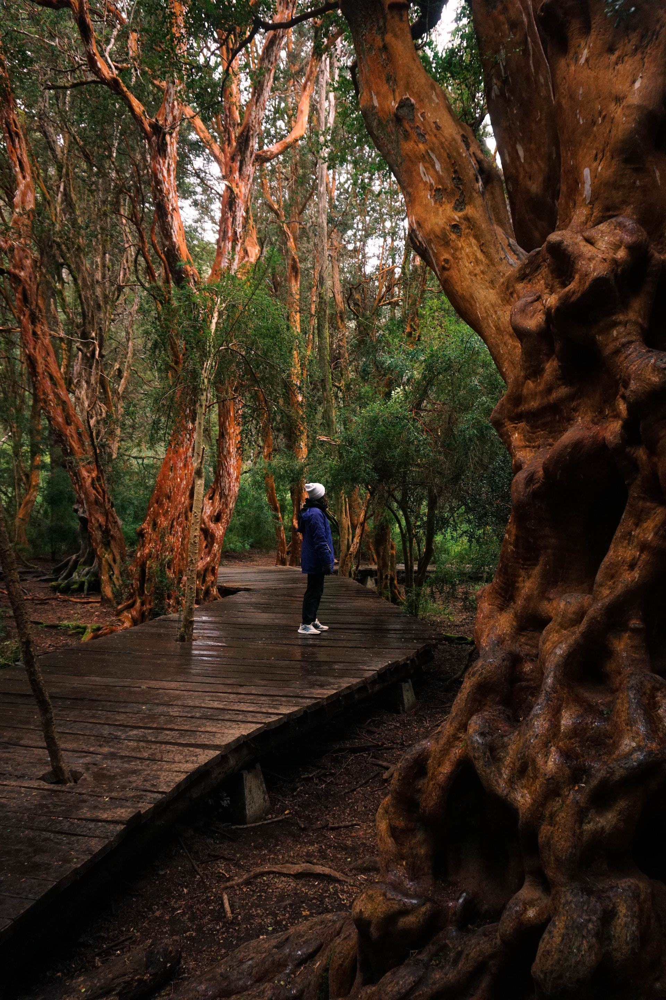

Un lugar para soñar despierto...
Bariloche es una ciudad ubicada entre bosques milenarios, montañas cubiertas de nieve y lagos cristalinos, en la provincia de Río Negro, Argentina. Se trata de una postal de nuestra Patagonia. Una ciudad anfitriona por excelencia, enmarcada por algunas de las bellezas naturales más importantes del país.
¿Qué ver en bariloche?
Vení a disfrutar de Bariloche las cuatro estaciones del año. Encontrarás una naturaleza que premia a cada visitante con paisajes maravillosos, desde picos nevados y lengas cobrizas, hasta valles cubiertos de flores y aguas cristalinas.
¿Qué hacer en bariloche?
La naturaleza en Bariloche te ofrece la posibilidad de realizar un montón de actividades durante todo el año. Hay mucho para hacer y recorrer: playas, ríos, bosques, estepa, deportes de aventura, caminar o, simplemente, contemplar sus sublimes paisajes. Vení a disfrutar de su aire puro, siempre.¡Descubrí Bariloche en todas sus temporadas!
¿Qué comer en Bariloche?
En Bariloche tenés la combinación ideal: los sabores únicos y exquisitos de la Patagonia, el talento de los más reconocidos chefs y los ingredientes más naturales. Podrás elegir entre cientos de lugares donde degustar la cocina regional de Bariloche, conocer nuestra historia y experimentar las sensaciones que ofrecen nuestros paisajes.